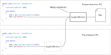
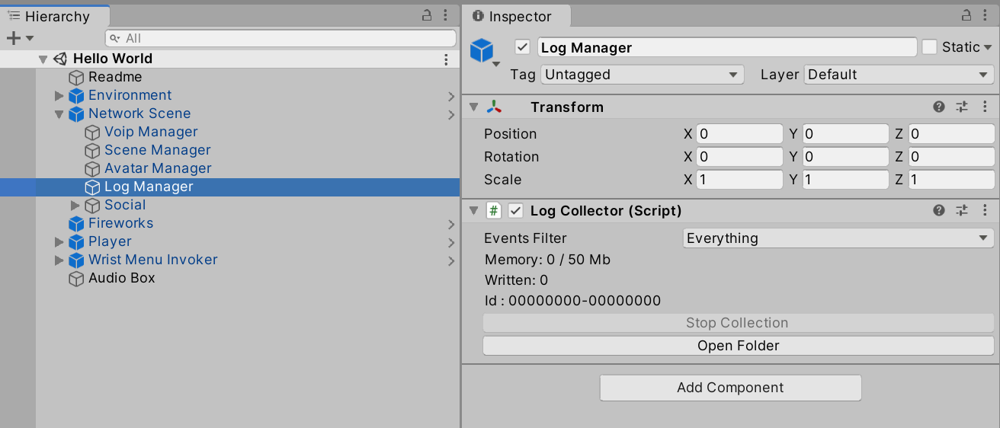
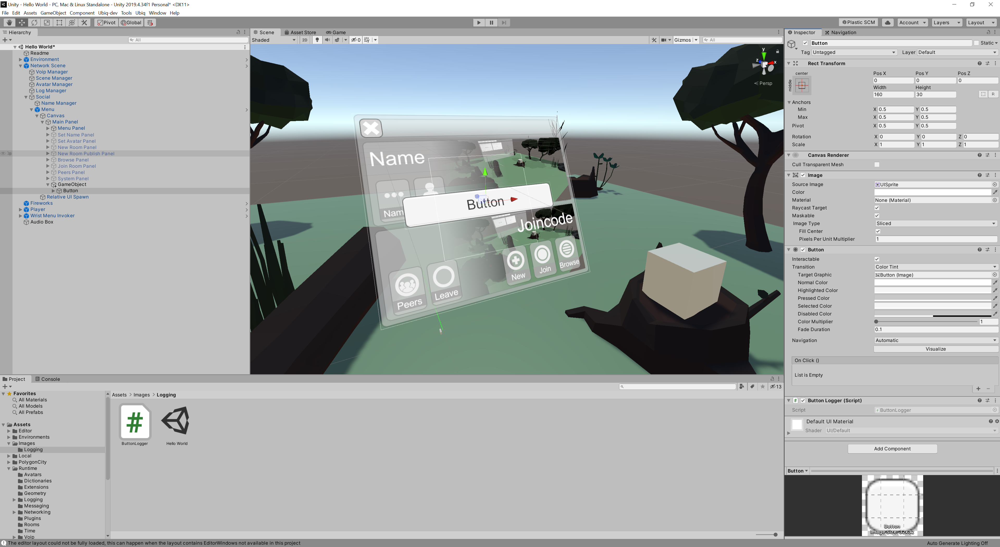
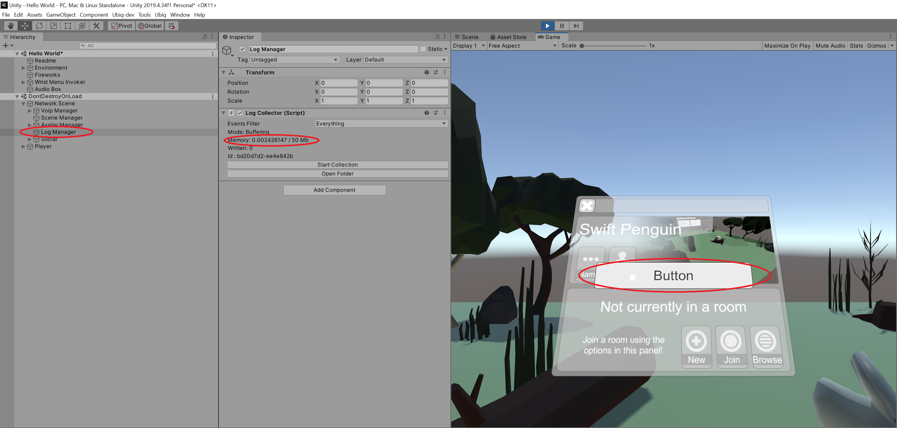
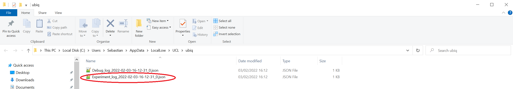
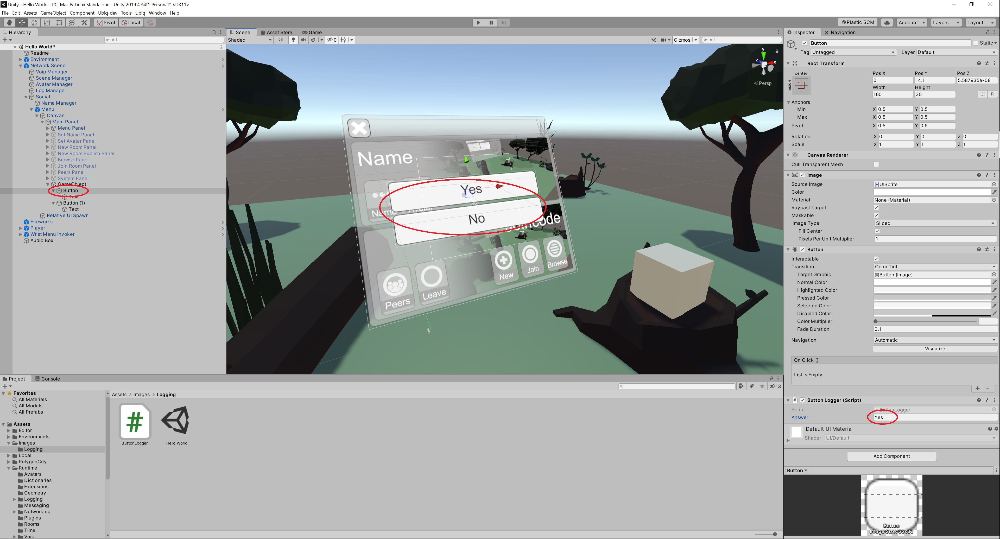
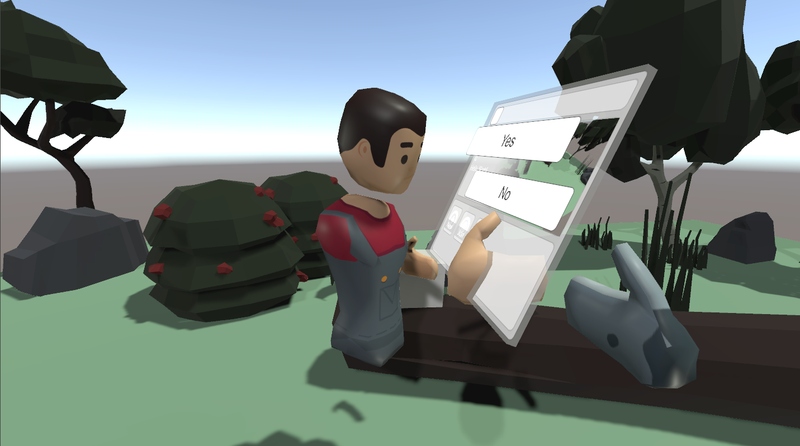

Logging
Ubiq has the ability to record, forward and store logs. Ubiq itself generates logs, and custom components can create them too.
For example, the logging system could be used to record the answers to a questionnaire, or the direction of a user's gaze, and forward them to an experimentor.
This guide shows how to set up and log some simple data in the Hello World scene.
Log Flow
Log events (such as answering a question) are generated by Log Emitters with a simple call, e.g. debug.Log("MyEvent"). These events are received by a Log Collector. LogCollector is a Component belonging to a NetworkScene. Depending on where logs are finally written, the local LogCollector may forward events to another LogCollector in the same room, or write them directly to a file.

There can be many Log Emitters in an application. There should be one LogCollector per Peer. Only one LogCollector should be writing at a time.

Creating a Questionnaire Button
Log events can come from any source. In this guide, they will be generated when a user presses a button.
Create a new Button in the scene. Below, a new GameObject was added to the Main Menu. Create a new script, ButtonLogger, and add it to the Button as well.

The script for ButtonLogger is below.
using Ubiq.Logging;
using UnityEngine;
using UnityEngine.UI;
public class ButtonLogger : MonoBehaviour
{
ExperimentLogEmitter events;
// Start is called before the first frame update
void Start()
{
events = new ExperimentLogEmitter(this);
GetComponent<Button>().onClick.AddListener(OnButtonClicked);
}
void OnButtonClicked()
{
events.Log("Button Pressed");
}
}
First, an ExperimentLogEmitter is declared. This is the object that will be used to emit log events. It is declared in the class but initialised in Start(). This is because it has to find the local Log Collector to communicate with, which can't be done until the scene initialisation begins.
Event Types
Events can be given a Type. The type hints at the meaning of the event. For example, Info events record how the application itself is working. Experiment events could record data for experiments. Debug events could record simple debugging information.
Any code can create any type of event. The type is used to filter events.
The Emitter created in the ButtonLogger script will generate Experiment events.
Log Collector
The default NetworkScene Prefab already contains a LogCollector, so there is no need to add this.
A callback is registered with the Button's OnClick event by the ButtonLogger script. When this is raised by the user clicking the button, a log event ("Button Pressed") is emitted.
Start the Scene and look at the Log Collector in the Inspector. As the Button is clicked the memory usage of the collector will increase, indicating that the Button is generating events.

Writing Logs
The events will remain in the LogCollector until they are requested.
Click Start Collection. The Entries count will increase, and opening the log folder will reveal an Experiment log, with a number of Button Pressed events.

[{"ticks":637795015469208026,"peer":"f6aa7d01-24da1cf2","event":"Button Pressed"},
{"ticks":637795015470638029,"peer":"f6aa7d01-24da1cf2","event":"Button Pressed"},
{"ticks":637795015471998382,"peer":"f6aa7d01-24da1cf2","event":"Button Pressed"},
{"ticks":637795015473438942,"peer":"f6aa7d01-24da1cf2","event":"Button Pressed"},
{"ticks":637795015474853269,"peer":"f6aa7d01-24da1cf2","event":"Button Pressed"},
{"ticks":637795015476313220,"peer":"f6aa7d01-24da1cf2","event":"Button Pressed"},
{"ticks":637795015477743218,"peer":"f6aa7d01-24da1cf2","event":"Button Pressed"},
{"ticks":637795015479173222,"peer":"f6aa7d01-24da1cf2","event":"Button Pressed"},
{"ticks":637795015480802962,"peer":"f6aa7d01-24da1cf2","event":"Button Pressed"},
{"ticks":637795015482232892,"peer":"f6aa7d01-24da1cf2","event":"Button Pressed"}
Logging Arguments
The LogEmitter::Log() method can take a number of arguments in addition to the event name.
Add a new member to the ButtonLogger, AnswerName, and pass it in as an argument.
public string Answer;
void OnButtonClicked()
{
events.Log("Button Pressed", Answer);
}
The value of Answer can be set up in the inspector. Duplicate the Button and set two different values of Answer for each.

Now, when looking at the log after pressing the buttons it will show the value of Answer as well.
[{"ticks":637795019171902297,"peer":"ba742247-1415eb07","event":"Button Pressed","arg1":"Yes"},
{"ticks":637795019174622297,"peer":"ba742247-1415eb07","event":"Button Pressed","arg1":"Yes"},
{"ticks":637795019180442303,"peer":"ba742247-1415eb07","event":"Button Pressed","arg1":"No"},
{"ticks":637795019183882312,"peer":"ba742247-1415eb07","event":"Button Pressed","arg1":"No"},
{"ticks":637795019201742296,"peer":"ba742247-1415eb07","event":"Button Pressed","arg1":"Yes"}
Practically any variable that can be turned into a string can be logged this way.
Collecting from a Distributed Experiment
So far the LogCollector has just collected from the local player.
Create a Build of the Hello World application and run it, then press the buttons a few times.
Note that so far, the application has not even joined a room. This is OK because the LogCollector will hold all logs until they are requested.
Next, press Play to load the Hello World Scene in the Editor.
Now have both Peers join the same room (new or old, in any order). When both have joined, the Avatars of the other Peer should be visible in each.

In the Editor, navigate to the LogCollector and click on Start Collection in the Inspector.
The Entries count will increase, and an Experiment Log file will appear in the default Logs Folder, containing any answers entered in both the Editor and Standalone Build.
Considerations
To find out more about the logging, see the Logging section in the Advanced topics.
Log events can be generated from user actions, but also other external events, or at a regular frequency (e.g. to log the Transform of dynamic objects)
You can change the active LogCollector at runtime losslessly, so long as no Peers fail or unexpectedly disconnect.
Collection can also be started programmatically, in addition to clicking Start Collection. This allows experiment code to start collection other ways, including in Standalone builds.
See the Samples/Single/Questionnaire sample for a complete Questionnaire implementation.